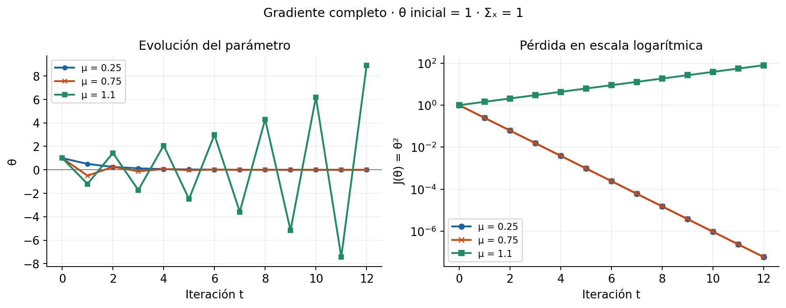

3. Tamaño de paso para el error cuadrático medio#
3.1. Enunciado y convención de actualización#
El material presenta la función de coste
y la condición
donde \(\lambda_{\max}\) es el mayor valor propio de \(\Sigma_x\).
Precisión sobre el factor dos. La condición depende de la regla de actualización. Para el gradiente completo de \(J\) y la actualización \(\theta^{(t+1)}=\theta^{(t)}-\mu\nabla J(\theta^{(t)})\), la cota es \(0<\mu<1/\lambda_{\max}\). La cota \(2/\lambda_{\max}\) del material corresponde al gradiente de \(J/2\), o a usar la mitad del gradiente de \(J\). El recorte no muestra la regla de actualización; por eso se explicitan las dos convenciones.
Precisión sobre \(\Sigma_x\). La matriz \(\mathbb E[xx^T]\) es la matriz de segundos momentos. Coincide con la matriz de covarianza cuando \(\mathbb E[x]=0\), pues
En lo que sigue se conserva la definición \(\Sigma_x=\mathbb E[xx^T]\) del enunciado.
3.2. Hipótesis#
Suponemos que \(x\) y \(\theta\) son vectores columna de la misma dimensión, que \(\mathbb E[\|x\|^2]<\infty\) y \(\mathbb E[y^2]<\infty\), y que se emplea el gradiente exacto de la esperanza. La matriz \(\Sigma_x\) es simétrica y semidefinida positiva porque, para cualquier vector \(v\),
Primero suponemos que \(\Sigma_x\) es definida positiva. Después se analiza el caso semidefinido.
3.3. Demostración con el gradiente completo de \(J\)#
3.3.1. Paso 1 Desarrollar la función de coste#
Como \(y\) y \(\theta^Tx\) son escalares,
3.3.2. Paso 2 Calcular el gradiente y la Hessiana#
La matriz \(\Sigma_x\) es simétrica, de modo que
Entonces,
Si \(\theta^*\) minimiza \(J\), satisface
Cuando \(\Sigma_x\) es definida positiva, el mínimo es único.
3.3.3. Paso 3 Expresar la actualización respecto del mínimo#
El descenso de gradiente con paso constante \(\mu\) es
Restando \(\theta^*\) a ambos lados,
Aquí \(I\) denota la matriz identidad.
3.3.4. Paso 4 Analizar cada dirección propia#
Por simetría de \(\Sigma_x\), existe una base ortonormal de vectores propios. Si \(v_j\) corresponde al valor propio \(\lambda_j>0\), entonces
Multiplicando (3.2) por \(v_j^T\),
Al repetir la igualdad,
Para que esta componente tienda a cero desde cualquier valor inicial, debe cumplirse
3.3.5. Paso 5 Resolver la desigualdad#
Para cada \(\lambda_j>0\),
La condición debe cumplirse en todas las direcciones. La restricción más exigente corresponde al mayor valor propio:
Bajo esta condición, todas las componentes del error tienden a cero y \(\theta^{(t)}\to\theta^*\).
3.4. Por qué aparece la cota del material#
Si la actualización utiliza la mitad del gradiente,
entonces
En cada dirección propia, el factor de multiplicación es ahora \(1-\mu\lambda_j\). Por tanto,
Al imponer la desigualdad para todos los valores propios positivos,
Es exactamente la condición del material. La misma regla se obtiene al minimizar \(J/2\) con un paso de tamaño \(\mu\), ya que \(\nabla(J/2)=\nabla J/2\).
Función y actualización |
Hessiana de la función utilizada |
Intervalo de convergencia |
|---|---|---|
\(J\), con \(\theta^{(t+1)}=\theta^{(t)}-\mu\nabla J\) |
\(2\Sigma_x\) |
\(0<\mu<1/\lambda_{\max}\) |
\(J/2\), con \(\theta^{(t+1)}=\theta^{(t)}-\mu\nabla(J/2)\) |
\(\Sigma_x\) |
\(0<\mu<2/\lambda_{\max}\) |
3.5. Qué ocurre con la pérdida y con los extremos del intervalo#
Al desarrollar \(J\) alrededor de cualquier mínimo \(\theta^*\) y usar \(\Sigma_x\theta^*=\mathbb E[xy]\),
En una base ortonormal de vectores propios, esta expresión es
Con el gradiente completo, cada término del error se multiplica en la siguiente iteración por \((1-2\mu\lambda_j)^2\). Dentro del intervalo (3.3), todos los términos correspondientes a valores propios positivos decrecen, salvo los que ya son cero.
En \(\mu=0\), los parámetros permanecen fijos. En \(\mu=1/\lambda_{\max}\), el factor de una dirección de curvatura máxima es \(-1\): una componente inicial no nula alterna de signo sin reducir su magnitud. Por encima de ese extremo, su magnitud crece. Por ello los extremos se excluyen de la garantía de convergencia desde cualquier inicialización.
3.6. Caso semidefinido positivo#
Si \(\Sigma_x\) tiene valores propios cero, \(J\) puede tener varios mínimos. Las ecuaciones normales siguen siendo consistentes bajo las hipótesis de segundos momentos: si \(v\) está en el núcleo de \(\Sigma_x\), entonces
de donde \(v^Tx=0\) casi seguramente y, por tanto, \(v^T\mathbb E[xy]=0\). Así, \(\mathbb E[xy]\) pertenece al espacio imagen de \(\Sigma_x\).
En una dirección de valor propio cero, (3.2) tiene factor \(1\), de manera que esa componente de los parámetros no cambia. Esto no afecta el valor de \(J\), que es constante en dicha dirección. Si \(\lambda_{\max}>0\) y se respeta la cota correspondiente, las componentes con valores propios positivos convergen y el algoritmo llega a un mínimo determinado por la inicialización.
Si \(\lambda_{\max}=0\), entonces \(\Sigma_x=0\), \(x=0\) casi seguramente y \(J(\theta)=\mathbb E[y^2]\) es constante. En ese caso no se debe evaluar una cota que divide entre \(\lambda_{\max}\): el gradiente es cero para todo \(\theta\).
3.7. Ejemplo que distingue las dos convenciones#
Tomemos \(x=2\) y \(y=2\) de forma determinista. Entonces
Con el gradiente completo,
La condición correcta es \(0<\mu<1/4\). Si \(\mu=0.1\) y \(\theta^{(0)}=0\), se obtiene
\(t\) |
\(\theta^{(t)}\) |
\(J(\theta^{(t)})\) |
|---|---|---|
0 |
0 |
4 |
1 |
0.8 |
0.16 |
2 |
0.96 |
0.0064 |
3 |
0.992 |
0.000256 |
En cambio, \(\mu=0.3\) hace que \(1-8\mu=-1.4\), cuyo valor absoluto supera \(1\). Por tanto, la iteración diverge desde \(\theta^{(0)}=0\), aunque \(0.3<2/4\). Esto muestra por qué la cota \(2/\lambda_{\max}\) requiere la convención del medio gradiente.
Alcance del resultado. La demostración corresponde al descenso con el gradiente exacto de una función cuadrática. En descenso estocástico, sustituir la esperanza por observaciones aleatorias introduce ruido; las condiciones de convergencia en media o en media cuadrática requieren un análisis adicional.
3.8. Comprobación gráfica#


Figura 3.1 Ejemplo auxiliar \(J(\theta)=\theta^2\), con \(\theta^{(0)}=1\) y \(\Sigma_x=1\). La cota para el gradiente completo es \(0<\mu<1\). El código y las comprobaciones se encuentran en el cuaderno.#